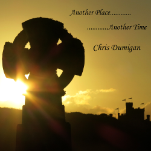
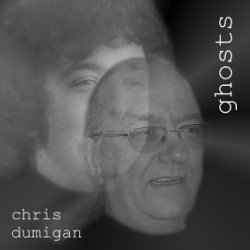
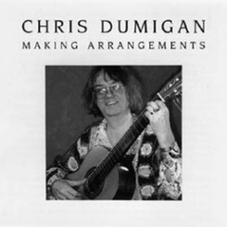
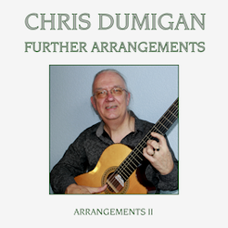
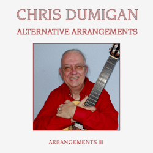
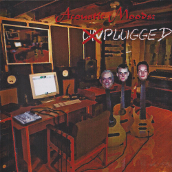
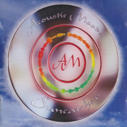
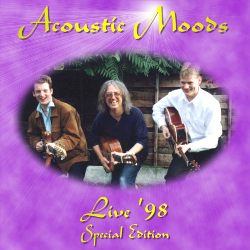
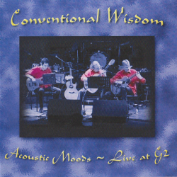
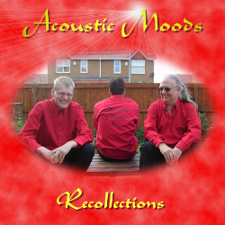

Chris Dumigan Musical Services
Home
News
Teaching
Composing
Arranging
Transcribing
Performing
Shop
Compositions
Arrangements
CD's
Contact Chris:
p - 07740 117956
e -
c.dumigan@ntlworld.com
Chris Dumigan

Another Place, Another Time

Ghosts

Making Arrangements

Further Arrangements

Alternative Arrangements
Acoustic Moods

Plugged

Suncatcher
Live '98

Live '98 Special Edition
(2 CD's)

Conventional Wisdom
(Live)

Recollections
(Live - 2 CD's)
 Live '98
Live '98